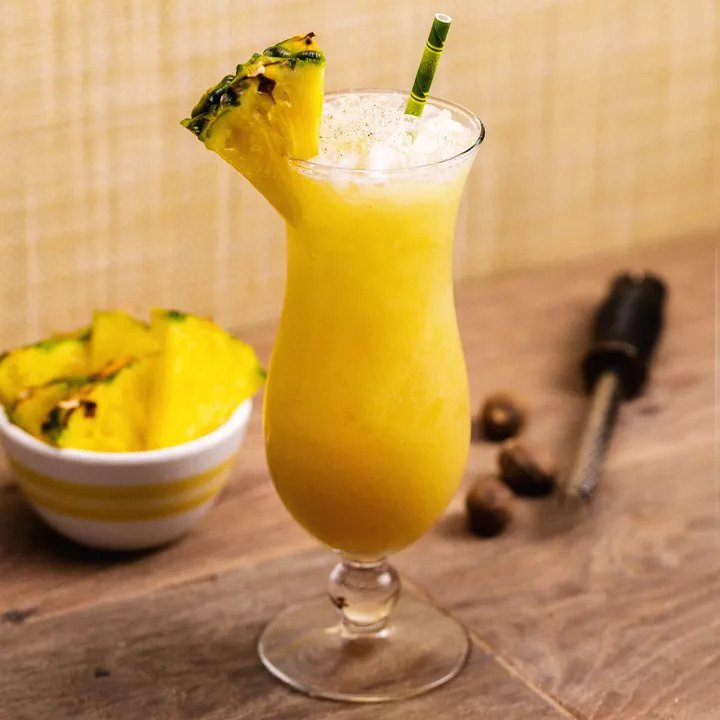

Back to index
Painkiller

A twist on the Piña Colada; It will cure what ails you.
Made with dark rum, pineapple juice, orange juice and cream
of coconut, the drink was created in the 1970s at the Soggy
Dollar Bar in the British Virgin Islands (BVI), where the
confluence of warm temperatures and vacation vibes necessitated
cold, refreshing libations. And where, with no dock, dollars
were bound to get wet as patrons swam ashore.
Ingredients
- 2 ounces Pusser’s rum
- 4 ounces pineapple juice
- 1 ounce orange juice, freshly squeezed
- 1 ounce cream of coconut
- Garnish: nutmeg, freshly grated
- Garnish: pineapple wedge
Steps
- Add the rum, pineapple juice, orange juice and cream of
coconut to a shaker with ice and shake vigorously but
briefly to combine.
- Strain into a hurricane glass or snifter over crushed ice.
- Garnish with freshly grated nutmeg and a pineapple wedge.
- Serve with a straw.
Back to index